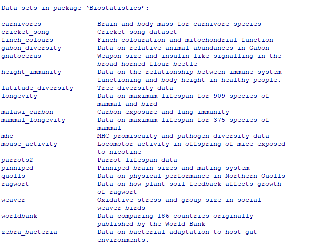

第四章 开放科学资源
开放科学资源不是“免费资源”的同义词。它更强调研究过程和研究成果的可访问、可验证、可复用与可协作。对于《教育学文献检索与数据分析》这门课而言，开放科学资源有两层意义：一是帮助学习者突破单一馆藏或单一数据库的限制，找到论文、数据、代码、工具和开放教材；二是训练研究者以透明、可复核的方式使用资源，说明来源、版本、许可和伦理边界。
开放科学的资源谱系
开放科学资源至少包括开放获取论文、开放数据、开放代码、开放教育资源、开放工具和开放基础设施。开放获取论文解决“读得到”的问题，开放数据解决“能否检验和再分析”的问题，开放代码解决“过程能否复现”的问题，开放教育资源解决“学习材料能否共享和改编”的问题，开放工具则降低了数据分析、文献管理和可视化的技术门槛。
需要特别区分开放资源与图书馆订购资源。学校图书馆购买的电子图书、期刊全文库和专业数据库对校内用户开放，但通常受授权协议限制；真正意义上的开放资源则往往允许公众访问，并以明确许可说明复用范围。二者都很重要，但使用边界不同。
开放获取论文
开放获取论文可以通过开放期刊、机构知识库、学科仓储、预印本平台和开放索引工具获得。开放期刊提供正式出版的开放论文；机构知识库保存高校或研究机构成员成果；预印本平台使研究在同行评议前就能被看到；开放索引工具则帮助研究者发现可合法获取的开放版本。
使用开放论文时要注意版本。预印本不等于正式发表版本，作者接受稿可能与出版版本在排版、页码和细节上存在差异，机构库版本也可能附带版权限制。课程论文和学位论文写作中，若能够获取正式出版版本，应优先引用正式版本；若引用预印本、工作论文或报告，应说明版本与访问日期。
电子图书与开放教育资源
电子图书是学习的重要入口。图书馆常见平台包括中文电子书平台、外文电子书平台和出版社电子书平台。它们适合系统学习某一主题的基础知识，但下载、打印、并发访问和复制范围往往受授权限制。使用这类资源时，必须遵守平台规则，不批量下载，不传播受限文件。
开放教育资源更强调可访问、可复制、可修改和可再发布。开放教材、公开课、开放课程材料、方法教程、数据分析案例和代码笔记都可成为学习资源。判断开放教育资源质量时，应关注作者或机构、更新时间、许可协议、内容结构和适用对象。开放并不自动等于高质量，仍需评价。
开放数据资源
开放数据包括政府统计数据、国际组织数据、学术论文附带数据、数据期刊、数据仓储和软件内置数据集。政府数据适合宏观背景和政策分析，国际组织数据适合跨国比较，数据期刊和数据仓储适合寻找可复用研究数据，软件内置数据集则适合学习统计和机器学习方法。
使用开放数据前，必须阅读数据说明、变量字典、采样方法、更新频率和许可协议。同样名为“教育投入”的指标，可能分别指财政性教育经费、生均经费、家庭教育支出或项目投入；同样名为“学习时间”的变量，可能来自问卷自报、平台日志或课堂观察。指标口径不清，分析越复杂，错误越隐蔽。

开放工具与开放代码
开放工具降低了研究门槛。R、Python、Zotero、VOSviewer、JASP、Jamovi等工具可分别用于数据分析、文献管理、统计建模和可视化。开放代码平台如GitHub、Gitee等支持保存代码、记录版本、协作修改和公开项目过程。
开放代码的核心价值是复现。一个研究项目如果只有最终图表，读者很难判断数据清洗和分析过程是否可靠；如果同时提供原始数据说明、清洗脚本、分析代码、输出图表和环境信息，就更容易复核。初学者可以从复现小型案例开始，逐步学习如何组织自己的分析文件夹。
project/
data_raw/ 原始数据，只读保存
data_clean/ 清洗后数据
scripts/ 清洗与分析代码
outputs/ 图表和结果表
docs/ 数据字典、说明与报告
这个目录结构体现的不是形式美，而是研究过程的可追踪性。开放科学首先要求自己能复现自己的分析，然后才谈得上让他人复用。
开放与伦理边界
开放科学不是无条件公开一切。教育研究常涉及学生成绩、学习行为、家庭背景、课堂录像、访谈文本和平台日志。这些数据可能包含隐私和敏感信息，不能因为追求开放而直接发布。更稳妥的做法包括公开变量字典、匿名化汇总数据、模拟数据、分析代码和研究流程，而把原始敏感数据保存在受控环境中。
开放还要尊重知识产权和许可协议。开放资源常见许可包括署名、非商业、相同方式共享、禁止演绎等不同条件。使用图片、数据、代码和教材时，应确认是否允许改编、再发布和商业使用。没有许可说明的资源不应被默认视为可自由使用。
建立开放资源清单
围绕一个研究主题，可以建立开放资源清单。每条记录至少包括资源名称、网址、类型、发布机构、更新时间、许可或访问条件、可用字段、可能用途和注意事项。例如，研究“人工智能与教师教育”时，可以分别记录开放论文入口、政策文件库、教师调查数据、代码案例、可视化工具和开放教材。这样的清单不仅服务一次作业，也会逐渐形成个人研究基础设施。
开放资源的引用与保存
开放资源使用后，应当留下可追溯记录。论文应记录DOI、正式出版信息和开放版本来源；数据集应记录作者、版本、发布日期、下载日期、许可协议和变量说明；代码应记录仓库地址、提交版本、运行环境和依赖包；开放课程材料应记录作者、机构、许可和改编范围。只有这样，开放资源才能从“临时下载的材料”转化为可复核的研究证据。
在写作中，开放资源不应笼统写成“来自网络”。例如，使用开放数据集时，图表标题或方法部分应说明数据来源、筛选条件和处理方式；使用开放代码时，应说明自己是复现、修改还是重新编写；使用开放教育资源时，应注意是否允许改编和再发布。开放科学强调透明，透明的前提是记录清楚。
常见误区
第一，把“能下载”误认为“可随意使用”。第二，只保存数据文件，不保存变量字典和许可说明。第三，引用预印本时不说明版本。第四，使用开放代码却不记录依赖环境。第五，把图书馆订购资源当作开放资源传播。第六，为了开放而忽略学生和被调查者隐私。
本章小结
开放科学资源为学习和研究提供了更宽的入口，但也要求研究者具备更强的来源意识、版本意识、许可意识和伦理意识。真正负责任的开放科学，不是简单下载和分享，而是让资源使用过程更加透明、可复核、可解释，并在开放与保护之间取得平衡。
思考与练习
- 围绕一个研究主题，建立包含开放论文、开放数据、开放工具和开放教育资源的清单。
- 下载一个开放数据集，阅读其变量字典并说明三个变量的含义。
- 判断一个资源是否可以改编并再次发布，说明依据。